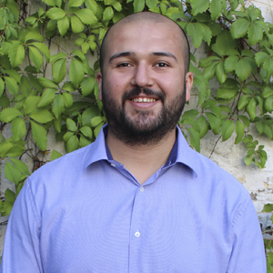

Rodrigo Vásquez Alarcón

Desarrollador Full Stack Trainee
Portafolio
LinkedIn
GitHub
Resumen
Profesional en transición hacia el desarrollo de software, con experiencia
en gestión de proyectos, análisis de datos y optimización de procesos.
Actualmente en formación como Full Stack Developer, con enfoque en
Backend, React y Cloud Computing con AWS/GCP. Me motiva la automatización
de procesos y la integración de inteligencia artificial aplicada en
sistemas escalables.
Habilidades
- Gestión de proyectos
- Optimización de procesos
- Trabajo en equipo
- HTML (nivel básico)
- Excel (nivel intermedio)
- Inglés (nivel intermedio)
Experiencias laborales
-
Nov 2024 - Ene 2025: Gestor comunitario en
Fundación Junto al Barrio.
-
Ago 2024 - Nov 2024: Asistente de producción en
Grupo UNNICO.
-
Jun 2021 - Jul 2024: Encargado de atención al cliente en
Escapes Linares.
-
Oct 2019 - Feb 2021: Asesor de Participación Ciudadana en
Ministerio de Educación.
-
Jun 2018 - Jul 2019: Gestor comunitario en
Municipalidad de Lo Barnechea.
Educación
-
1998 a 2009: Enseñanza básica y media en Colegio Instituto Linares.
-
2013 a 2017: Estudios de Licenciatura en Filosofía en Pontificia
Universidad Católica de Chile.
- 2025: Bootcamp de Full Stack en Desafío Latam.
Referencias laborales
-
Alejandra Estay
Municipalidad de Lo Barnechea
ale.estay@gmail.com
-
Andrés Justiniano
Ministerio de Educación
a.justiniano.m@gmail.com
- Patricia Matte
Grupo UNNICO
pmatte@unnico.com